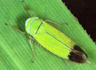

PESTS OF RICE :: Major Pests :: Green Leafhopper
2. Green leafhopper: Nephotettix virescens, N. nigropictus and N. cincticeps (Cicadellidae: Hemiptera)
Distribution and status: India, South Japan to oriental region, west of south Africa, Phillippines, Formosa, Sri Lanka
Host range: Rice, millets, grasses |

Nephotettix virescens |
N. nigropictus
|
Damage symptoms:Both nymphs and adults desap the leaves and cause “hopper burn” due to heavy infestation. Yellowing of leaves from tip downwards is the typical symptom caused by this pest. However, it is more important as a vector forrice tungro virus, rice yellow dwarf and transitory yellowing diseases.
|
ETL: 60 Nos. / 25 sweeping – Nursery
10 Nos. / hill - Flowering stage
5 Nos. / hill - Vegetative stage
2 Nos. / hill - Tungro endemic area
Bionomics: Adults green with black spot and black patch on wings, gravid female inserts 200-300 eggs in batches of 8-16 in midrib of leaf blade. Egg period 6-7 days, nymphs undergo five instars and become adult in 25 days. Adult longevity 20-30 days. The population normally increases from August onwards, reaches maximum during September - October and declines from November.
|
|
Management
- Use resistant varieties like IR 20, IR 50, CR 1009, Co 46, PTB 2, PTB 18, IET 7301, IET 7302, IET 7303 and Vani, Vikra marka, Lalit, Nidhi.
- Nursery should not be raised near the lamp posts.
- Apply neem cake @ 12.5 kg/800 m2 nursery as basal dose.
- Apply carbofuran 3 G @ 3.5 kg or phorate 10 G @ 1.0 kg or quinalphos 25 EC 80 ml or endosulfan 35 EC 80 ml per 800 m2 nursery. Maintain the water level at 2.5 cm for 3 days after granular application.
- Spray any of the following insecticide in 500 L water/ha
- Acephate 75 SP 666-1000 g
|
- Imidacloprid 17.8 SL 100 -125 ml
|
|
|
|
- Phosphamidon 40 SL 875 ml
|
- Ethofenoprox 10EC 500-750 ml
|
|
- Fipronil 5 SC 1-1.5 kg or
0.3 GR 16.7 - 25.0 kg
|
- Lambda-Cyhalothrin 2.5 EC 500 ml or 5 EC 250 ml
|
- Fenobucarb (BPMC) 50 EC
500-1500 ml
|
|
|
|